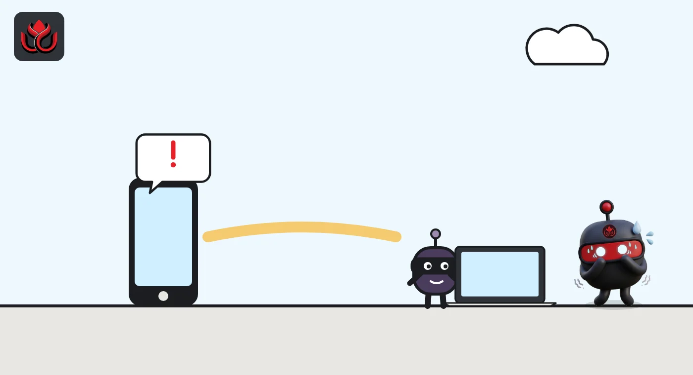
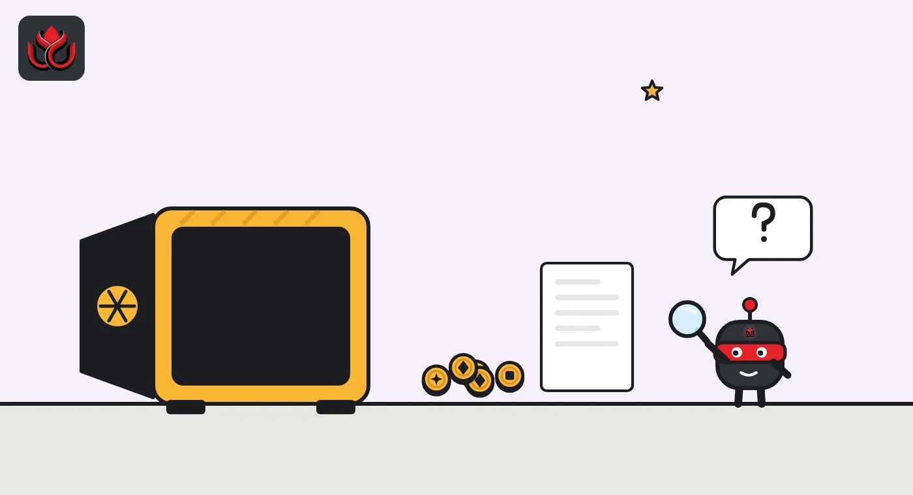

A spy chip in the box: $86.96 million drained from Ledgers sold by one reseller
Ledger says an implant hidden inside devices sold by Southeast Asian reseller CryptoBilis read the 24-word recovery phrase off the screen and sent it out over a mobile network. DeepSea puts the losses at $86.96 million. Ledger has confirmed no total.
Key points
- Ledger said on October 9 it was investigating fund losses among Southeast Asian buyers of the reseller CryptoBilis and asked the reseller to pause all sales.
- Ledger's Donjon security team says a separate implant inside the device captured the recovery phrase during setup and sent it over LTE using an eSIM.
- DeepSea lists $86.96 million drained; its own page gives both 76 victim wallets and 98 drained addresses. Ledger says it has not verified any loss total.
What DeepSea's data shows
DeepSea's hack tracker lists the case as a wallet drain of $86.96 million, dated 24 days before our check, which puts it at about October 9. According to DeepSea, the money came out of Bitcoin, Ethereum and Tron wallets. This is DeepSea's own estimate. Ledger has not confirmed any total.
DeepSea counts 76 victim wallets in its summary panel, but its written note on the same page says funds were drained from 98 addresses and that the total is still rising. The two numbers do not match, and DeepSea does not explain the gap. We report both.
The tracker shows 92.51 BTC still sitting in the main attacker wallet. At CoinGecko's price on November 2, that is about $7.3 million. DeepSea's hacks list marks that coin as not moved, yet the same page says the attacker split funds across 400 wallets up to four hops away, with the last movement four days before our check. The largest receiving wallets DeepSea shows took in $11.36 million, $8.97 million and $5.68 million.
Data: DeepSea (desea.io), checked November 1, 2026, 11:36 p.m. ET.
What happened
Hardware wallets sold by CryptoBilis, a reseller in Southeast Asia, carried a hidden implant that stole their owners' recovery phrases, Ledger says. DeepSea's tracker puts the losses at $86.96 million. Ledger has not confirmed a total.
The first warning came on October 9, 2026, at 9:32 a.m. ET. Ledger Support said it was looking into reports of lost funds from users in Southeast Asia who had bought devices from CryptoBilis. As a precaution, it asked the reseller to pause all sales and shipments of Ledger devices. It told anyone who had bought from CryptoBilis in the previous 90 days not to set up the device. Those who had already set it up should move their coins to a new device with a new seed phrase.
The next day, Ledger Support confirmed that one affected user's device contained an unauthorized hardware implant. By October 11, Ledger said every confirmed case involved devices sold through CryptoBilis, that its own systems and direct sales were unaffected, and that CryptoBilis had stopped selling hardware wallets. Ledger added that it was working with authorities and thanked SEAL 911, a volunteer crypto security group, for its help.
How the implant worked
Ledger's in-house security lab, the Donjon, published its first findings on October 13. According to Ledger, the implant sits inside the device case and reads what is shown on the screen. During setup, a Ledger displays the 24-word recovery phrase, the master key to the wallet. When the implant spots those screens, a small chip decodes the words and sends them out over LTE, the mobile data network, using a pre-loaded eSIM.
That matters for owners. Ledger says the implant is a separate part. It does not change the Secure Element (the chip that stores the keys) or the Ledger operating system, and it does not alter transactions or signatures. In plain terms, the attacker did not break the wallet. The attacker copied the backup words at the moment the owner first saw them, then could empty the wallet from anywhere.
Ledger says it has not confirmed how many users were hit or how much was lost, and that the figures circulating online come from third parties. It is also reviewing reports of implants in other devices and places. It asks victims to contact Ledger Support and file a police report, and not to send or open a device before speaking to Ledger or the police.

Timeline
Ledger Support says it is investigating losses among CryptoBilis buyers and asks the reseller to pause sales
Ledger Support confirms an unauthorized hardware implant in one affected device
Ledger's 72-hour update: all confirmed cases tied to CryptoBilis; reseller has stopped selling hardware wallets
Donjon findings: implant reads the recovery phrase from the screen and sends it over LTE
CEO Pascal Gauthier says he is leading the investigation with his executive team
Ledger says MediaMarkt Saturn has paused Ledger sales after one German customer reported an implant
DeepSea shows $86.96 million drained and 92.51 BTC in the main attacker wallet
How much was lost
Ledger itself has given no loss figure, so the dollar amounts here come from DeepSea's tracker. DeepSea's total of $86.96 million covers Bitcoin, Ethereum and Tron. The 92.51 BTC still in the main attacker wallet would be worth about $7.28 million at CoinGecko's price of $78,659 on the morning of November 2.
The victim count is less clear. DeepSea's summary says 76 victim wallets, while its written note says 98 drained addresses. One person can own several addresses, so the two numbers may measure different things, but DeepSea does not say so.

Beyond Southeast Asia
The case reached Europe on October 13. Ledger said the retailer MediaMarkt Saturn had stopped selling Ledger devices in stores and online, with Ledger's agreement, after one customer in Germany reported an implant. Ledger said no loss of funds was reported in that case. A community note on Ledger's post says some MediaMarkt listings were still live afterward.
Ledger's chief executive framed the problem as wider than one company. Pascal Gauthier wrote: "Physical supply chain tampering is a risk for the whole industry." He said Ledger is reviewing the controls on its direct sales and on resellers, and wants to work with other vendors on chain-of-custody and tamper-detection practices. Ledger has not said who tampered with the devices or at what point in the distribution chain.
LC Insight analysis
This section is our reading of the facts above, not a statement of fact.
- This case changes the standard advice on hardware wallets. A device that passes the usual checks can still leak the recovery phrase if someone has opened the box first, so where you buy matters as much as which brand you buy.
- DeepSea's numbers are useful but rough. The 76 versus 98 gap and the 'not moved' label next to a 400-wallet split suggest the tracker is still catching up, so treat $86.96 million as an estimate, not a final tally.
- Expect tighter reseller rules across the industry. Ledger has already told resellers never to restock returned products, and other wallet makers face the same physical risk.
What's next
- Whether Ledger publishes a confirmed count of victims and losses
- Donjon findings on devices from other sellers and countries
- Any movement of the 92.51 BTC DeepSea shows in the main attacker wallet
- Police action on who tampered with the devices
Disclaimer. This article is based on public information and the sources listed below as of the update time shown. It is for information only and is not investment, legal or tax advice. Figures may change as companies and authorities publish new data.
Sources
- DeepSea, Hacks: Ledger CryptoBilis drain (checked November 2, 2026)
- Ledger Support on X (October 9, 2026)
- Ledger on X, 72-hour update (October 11, 2026)
- Ledger on X, Donjon update (October 13, 2026)
- Pascal Gauthier, Ledger CEO, on X (October 13, 2026)
- Ledger on X, MediaMarkt Saturn update (October 13, 2026)
- CoinGecko, Bitcoin price (November 2, 2026)